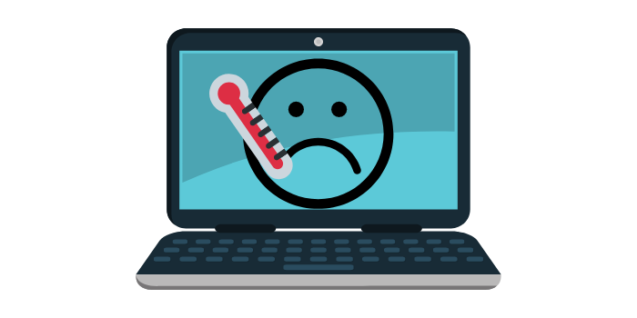
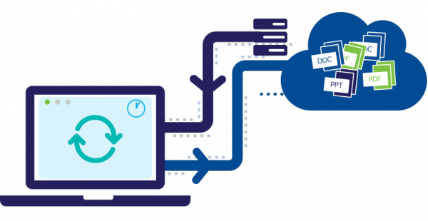

Nuestro servicio de Mantenimiento preventivo y correctivo consta de una revisión y optimización tanto de software como de hardware. Así te garantizamos el funcionamiento optimo de tu equipo de computo.

Limpieza y mantenimiento de sistema operativo (Software). Eliminando errores y problemas de "Computadoras Lentas"
Instalación de paqueterías y programas. Te ayudamos para llevar a cabo buenas practicas, eliminando los problemas comunes como son los virus.
Te asesoramos para poder realizar tus respaldos en la nube o tu propio disco duro.
Asesoría y soporte remoto para identificar problemas técnicos, si es posible resolverlos de forma remota.